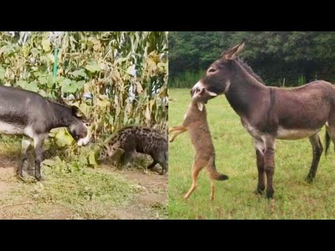
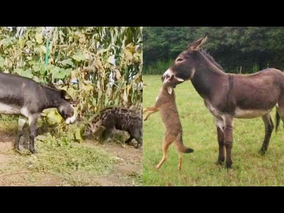

Early Succession Cycling Grass (forage) Water Sheep Time A little fertilizer can go a long way (chemical, legumes or just hay)
"All flesh is grass" Acknowledges the cycles of trophic cascade in literature and human history. Gene Logsdon (Pleasures of Pastures) Clifford D. Simak (novel) Peter 1:24 - "...man [is] as the flower of the grass. The grass withers, And its flower falls away"


 
